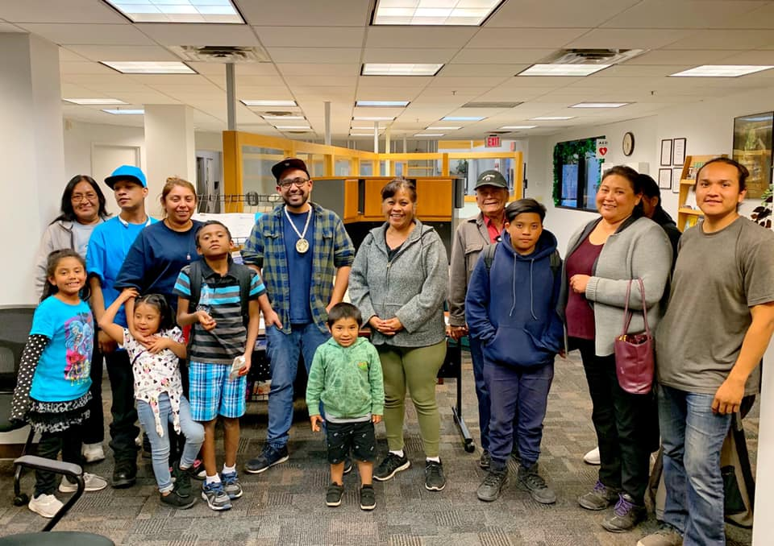

Teaching & Outreach
Teaching Philosophy
I view my role as a facilitator who provides students with the tools and resources they need to access and absorb knowledge, emphasizing active engagement over rote memorization. My teaching approach is grounded in Indigenous pedagogical traditions that center learning in the student through guided practice, consistent feedback, and the opportunity to explore and learn from mistakes without fear of negative consequences. I believe the most effective learning happens when students can make real-world connections to material and gain confidence through experimentation and growing mastery of a topic.
This philosophy shapes my work in both language and linguistics courses. In my language classes, where most students are heritage learners reconnecting with their ancestral language, I create low-stakes environments that acknowledge the connection between language learning and identity, allowing students to make mistakes and build confidence through detailed feedback and opportunities for correction. In linguistics courses, I encourage students to "play" with abstract concepts before applying them in assignments—whether that involves recording speech for phonetic analysis or jointly creating fictional societies to explore sociolinguistic interactions. I actively encourage students to communicate openly with me, challenge what they learn, and feel empowered to propose new solutions in their academic work, recognizing that they are in control of their educational journey while I serve as their guide.
Outreach
- 2025: “Culturally Responsive Language Goals: Reimagining Assessment and Pedagogy for Indigenous Revitalization.” 21st Annual Gila River Indian Community Reservation-Wide Teacher In-Service.
- 2025: “Centering Heritage Learners in O'odham Language Revitalization: Challenges, Support, and Community Planning.” Culture Teacher Gathering, Salt River Pima-Maricopa Indian Community.
- 2024: UofA Special Talk: “An analysis of O’odham reduplication and its implications for language revitalization”
- 2023: Project lead for the production of the Ak-Chin O’odham language dictionary and language survey
- 2023: UofA Language Revitalization Series: “Language Revitalization and Research at Ak-Chin”
- 2023: CCSU Fall Linguistics Colloquium: “Language Revitalization at the Interfaces…”
- 2022: NAMA Lecture Series (YouTube)
- 2021: “Native American Languages at Yale: Past, Present and Future,” panel discussion